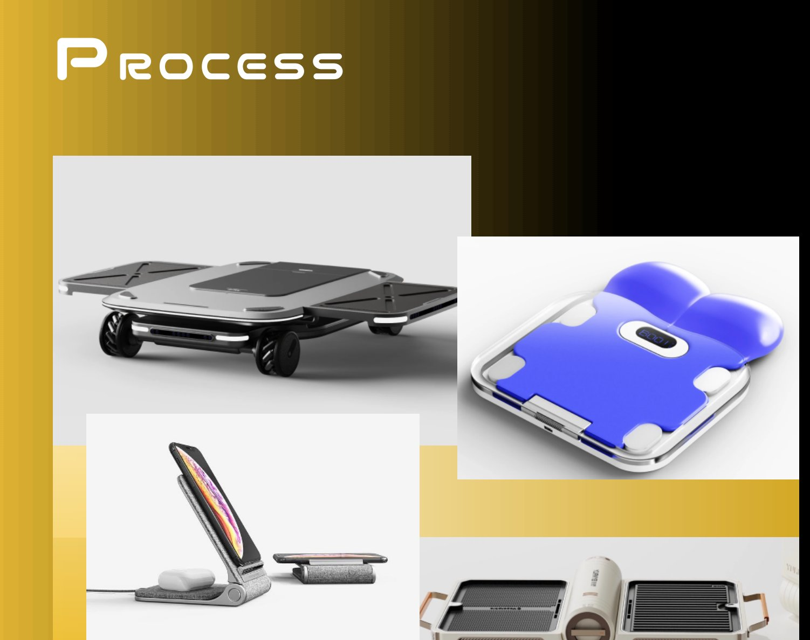
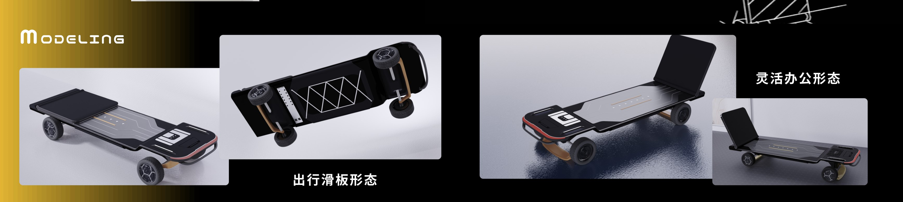
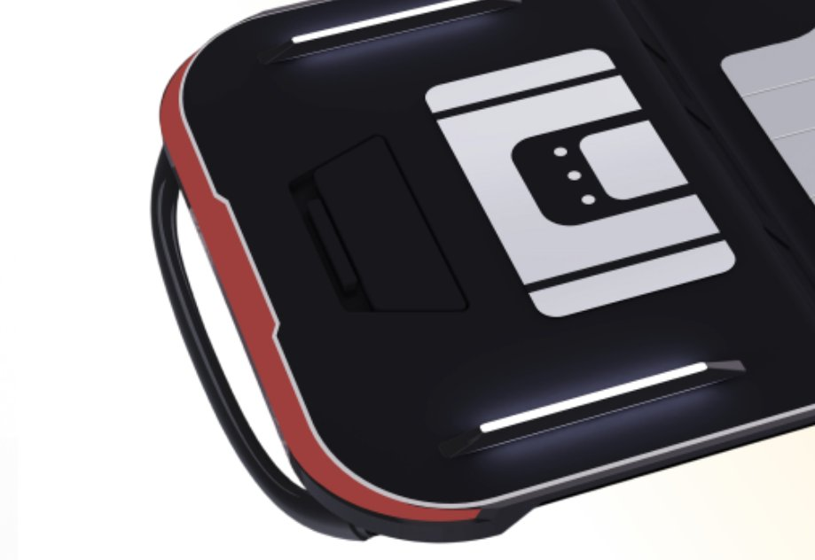
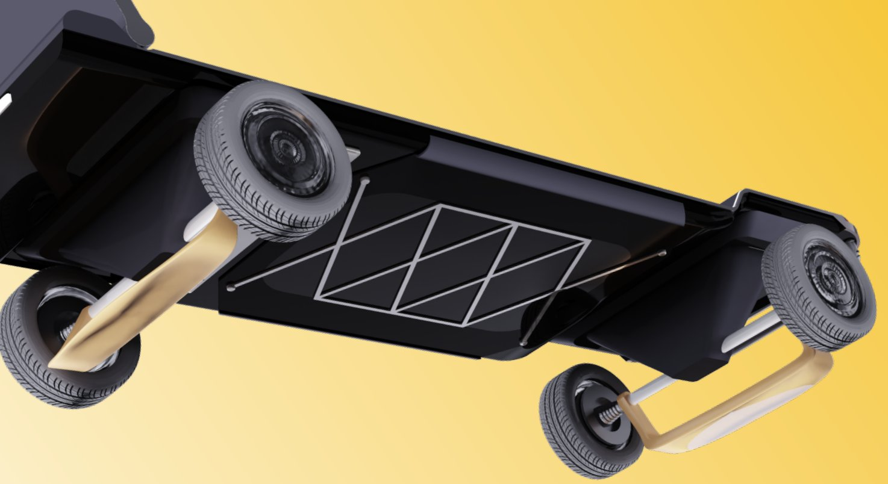
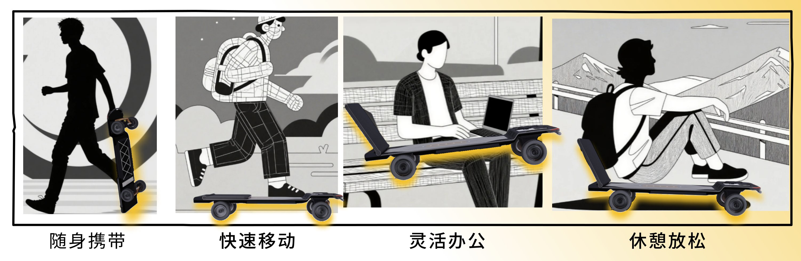
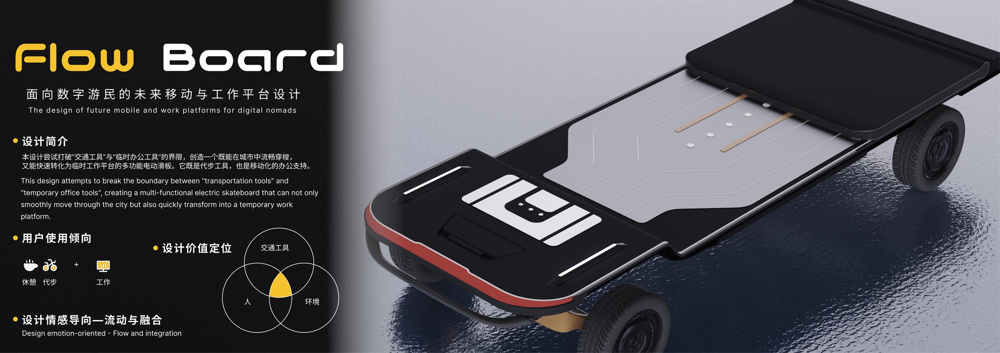
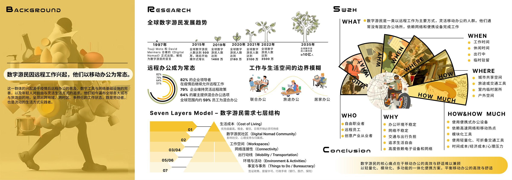
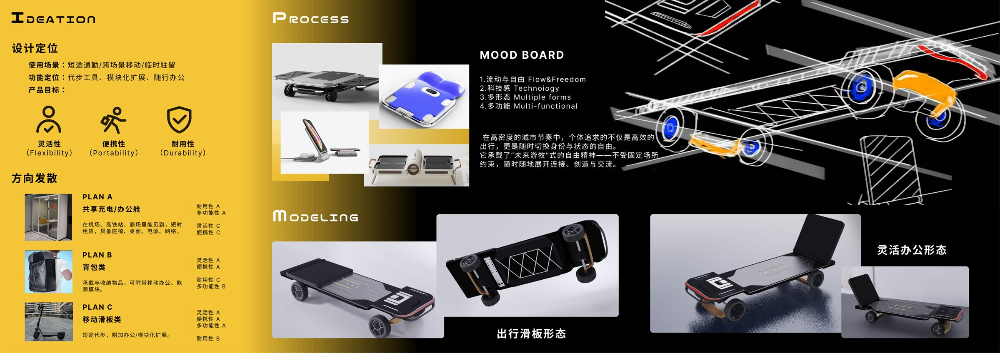
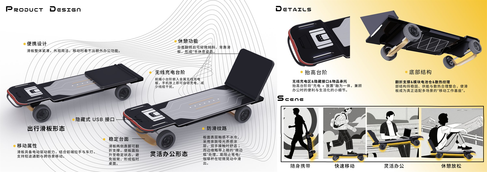

Brief / 设计简介
打破「交通工具」与「临时办公工具」的界限
创造一个既能在城市中流畅穿梭，又能快速转化为临时工作平台的多功能电动滑板。它既是代步工具，也是移动化的办公支持。
This design attempts to break the boundary between “transportation tools” and “temporary office tools”, creating a multi-functional electric skateboard that can not only smoothly move through the city but also quickly transform into a temporary work platform.
- 用户使用倾向
- 代步 · 工作 · 休憩 —— 一台设备覆盖三种状态。
- 设计情感导向
- 流动与融合 / Flow & Integration。
- 设计价值定位
- 交通工具 × 人 × 环境，在移动中重新组织工作与生活。
设计价值定位 / Value Positioning
Context / 背景研究
远程办公成为常态，数字游民规模化增长
全球数字游民发展趋势
1997 — 2035← 横向滑动查看完整时间轴
Source — Digital Nomad Research / 桌面研究整理，2022
Insight / 需求洞察
七层需求结构与 5W2H 人群画像
Seven Layers Model
数字游民需求七层结构-
01
生活成本Cost of Living
优先级最高。租金、餐饮、日常开销必须可持续。
-
02
数字游民社区Community
影响社交、心理支持与归属感。
-
03
工作空间Workspaces
联合办公、旅途办公与居家办公之间的切换。
-
04
网络连接性Connectivity
稳定网络与移动热点，是移动办公的前提。
-
05
出行动线Mobility
城市共享空间、旅途或交通工具、室内临时居所、户外空间。
-
06
环境与活动Environment
停留地的气候、活动与社交机会。
-
07
事宜与事务Bureaucracy
签证政策、居留许可，以及银行、医疗、保险等行政手续。
5W2H
人群画像 / Persona- 自由职业者
- 远程员工
- 创意产业从业者
- 办公环境不稳定
- 网络不稳定
- 交通与出行负担
- 追求生活自由
- 高度依赖电子设备与网络
- 工作时间
- 休闲时间
- 出行中
- 临时驻留
- 城市共享空间
- 旅途或交通工具
- 室内临时居所
- 户外空间
- 便携式办公设备
- 高速网络与移动热点
- 模块化工具
- 轻量化、可折叠交通工具
- 时间成本
- 经济成本
- 心理压力
数字游民的核心痛点在于 移动办公的高效与舒适难以兼顾。
以轻量化、模块化、多功能的一体化便携方案，平衡移动办公的高效与舒适。
Ideation / 概念发散
从三种方向到「移动滑板类」方案收敛
设计定位
Design Positioning- 使用场景
- 短途通勤 / 跨场景移动 / 临时驻留
- 功能定位
- 代步工具 / 模块化扩展 / 随行办公
- 产品目标
- 在高密度的城市节奏中，让个体随时切换身份与状态。
它承载了「未来游牧」式的自由精神——不受固定场所约束，随时随地展开连接、创造与交流。
方向发散
PLAN A / B / C| 方案 | 灵活性 | 便携性 | 耐用性 | 多功能性 |
|---|---|---|---|---|
| A共享充电 / 办公舱 | C | C | A | A |
| B背包类 | A | A | C | B |
| C移动滑板类Selected | A | A | B | A |
PLAN C 在灵活性、便携性与多功能性之间取得平衡，成为最终选择。

- 01流动与自由Flow & Freedom
- 02科技感Technology
- 03多形态Multiple Forms
- 04多功能Multi-functional
Form / 形态推演
一台设备，三种形态

出行滑板形态
紧凑轮廓、电动驱动与前端拉手，支持短途通勤与跨场景移动。
- 电动驱动
- 拉手 + 车灯
- 紧凑外形
灵活办公形态
两侧靠脚翻折支撑，使板面抬升至稳定状态，形成临时桌面。
- 翻折支撑
- 稳定台面
- 无线充电台阶
半休憩形态
台面翻转后轻微倾斜，背靠板体，形成「半休息」姿态。
- 倾斜台面
- 背靠支撑
- 亲肤哑光涂层
Detail / 细节结构
把充电、放置与支撑收进一块板


便携设计
滑板整体紧凑，外观简洁，移动时看不出额外办公功能。
休憩功能
台面翻转后可轻微倾斜，背靠滑板，形成「半休息姿态」。
无线充电台阶
前端小台阶嵌入金属无线充电板，手机放上即可自动充电，减少线缆干扰。
隐藏式 USB 接口
接口收在台阶侧面，与充电区整合，保持整块板面的整洁。
稳定台面
两侧靠脚翻折支撑，板面抬升至稳定状态，避免摇晃。
防滑纹路
亲肤哑光表层不冰冷，边缘微上翘的「微边框」阻止笔电与咖啡杯晃动滑出。
移动属性
具备电动驱动能力，结合前端拉手与车灯，支持短途通勤与跨场景移动。
抬高台阶
将「充电 + 放置」融为一体，兼顾办公便利与生活化的小细节。
底部结构
翻折支撑、模块电池仓与散热纹理合理整合，使滑板成为「移动工作基座」。
Scene / 使用场景
随身携带、快速移动、灵活办公、休憩放松

随身携带
紧凑轮廓与前端拉手，让滑板像背包一样随身。
快速移动
电动驱动与车灯，完成短途通勤与跨场景移动。
灵活办公
翻折支撑抬起板面，数十秒内形成稳定桌面。
休憩放松
台面轻微倾斜，背靠板体，形成半休息姿态。
Process / 原始展板
从研究到细节的四页完整展板
点击任意展板可放大查看原始排版与全部细节标注。



